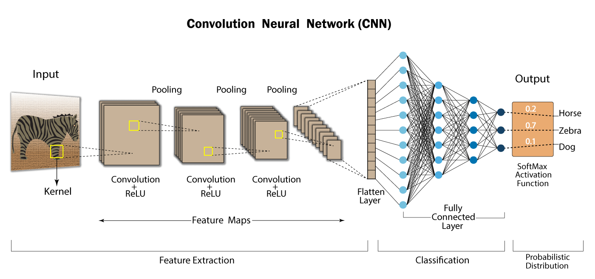
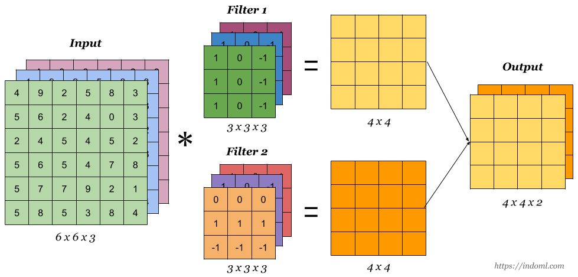
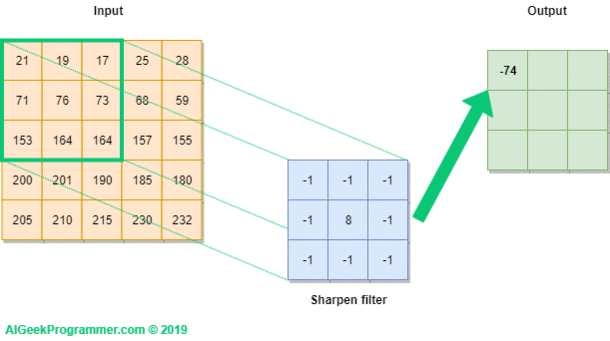

CNN
1 Introduction

그림 1. CNN 모델 예시
많은 일반 머신러닝 모델이나 통계 분석 모델은 독립 변수가 독립이라는 가정이 고려되어야 하지만 이미지의 독립 변수들이 서로 독립이 아니다. 픽셀값은 그 위치에 따라서 서로 상관성이 존재한다. 초기엔 독립 변수인 픽셀을 일렬로 늘어뜨려 input으로 사용했지만 위치 기반 픽셀의 상관성 정도를 자세히 반영하진 못했다. 이를 보완하기 위해 region feature가 고안됐다.
1.1 Region Feature
Region Feature 또는 Graphic Feature라고도 한다. 픽셀의 지역 정보를 학습할 수 있는 신경망 구조가 CNN이다.
2 CNN
Convolutional Neural Network (CNN)은 합성곱(convolution)으로 이루어진 인공신경망으로 Region Feature를 학습하기 위한 모형이다. CNN은 region feature를 추출하기 위해 convolution layer, feature dimension을 위한 pooling layer 및 fully connected layer (MLP)로 구성되어 있다.
2.1 Convolution Layer (Conv)
kernel 또는 filter라고 불리는 특징 추출기(Feature detector)를 사용하여 데이터의 특징을 추출하는 CNN 모델의 핵심 부분이다. Receptive Field를 정의해 입력 층의 이미지의 feature를 추출한다.
convolution layer의 output은 보통 feature map이라고 부르며 input data와 kernel로 구성되어 있다.

그림 2. convolution layer 예시
2.1.1 특징 추출 과정
2차원 입력에 대한 convolution layer는 그림 3과 같이 동작한다. Sharpen filter라고 쓰여진 3x3 행렬은 kernel로서 입력 데이터의 특징을 추출하는데, 입력 데이터의 전체를 보는 것이 아닌 kernel size 만큼의 일부분만을 보며 특징을 추출한다.
feature map은 kernel의 개수만큼 생성되는데 일반적으로 다양한 특징을 추출하기 위해 하나의 conv layer에서 여러개의 kernel을 사용한다.
kernel size에 정해진 규칙은 없으나 주로 3*3 많이 사용하며 대게 conv layer마다 다른 kernel size를 적용한다.

그림 3. 2d convolution layer의 동작 방식
2.1.2 합성곱 연산을 위한 설정 사항
- padding : 입력 데이터의 테두리를 0으로 채워 데이터의 크기를 늘려준다
- 왜 padding을 사용하는가? padding이 없을 경우 합성곱은 입력 데이터의 1행 1열부터 시작된다. 그런데 합성곱은 입력 데이터에서 kernel size만큼의 영역을 하나로 축소하여 특징을 추출하기 때문에 이 경우 입력 데이터의 가장자리, edge 부분의 특징을 추출하기 어렵다. edge의 특징까지 추출하고자 하면 적어도 0행 0열부터 kernel을 적용해야 하는데 허공에서 element-wise 계산을 할 수 없으니 0을 추가해준다.
- stride : kernel이 얼만큼씩 이동하면서 합성곱 계산을 할 것인지를 의미한다.
- 일반적으로 한 칸씩 이동한다.
- weight sharing:
- kernel size : kernel의 행과 열 개수
- 사이즈가 작을수록 국소 단위의 특징을 추출한다.
- kernel 개수 : 몇 개의 feature map을 추출하고 싶은지에 따라 kernel 개수를 정한다.
그림 4. 2d convolution layer 예시
2.1.3 feature map의 shape 계산 방법
feature map은 다음 레이어의 입력 데이터가 되기 때문에 feature map의 shape을 계산할 수 있어야한다.
feature map = (\(m\times m\))일 때, (1)과 같이 계산할 수 있다.
\[ \begin{align} m=\lfloor\frac{n+2p-f}{s}+1\rfloor \end{align} \]
\(\text{where} :\)